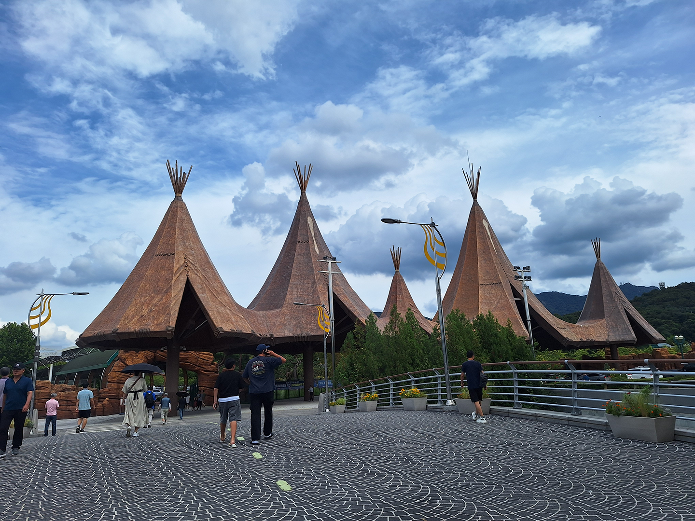
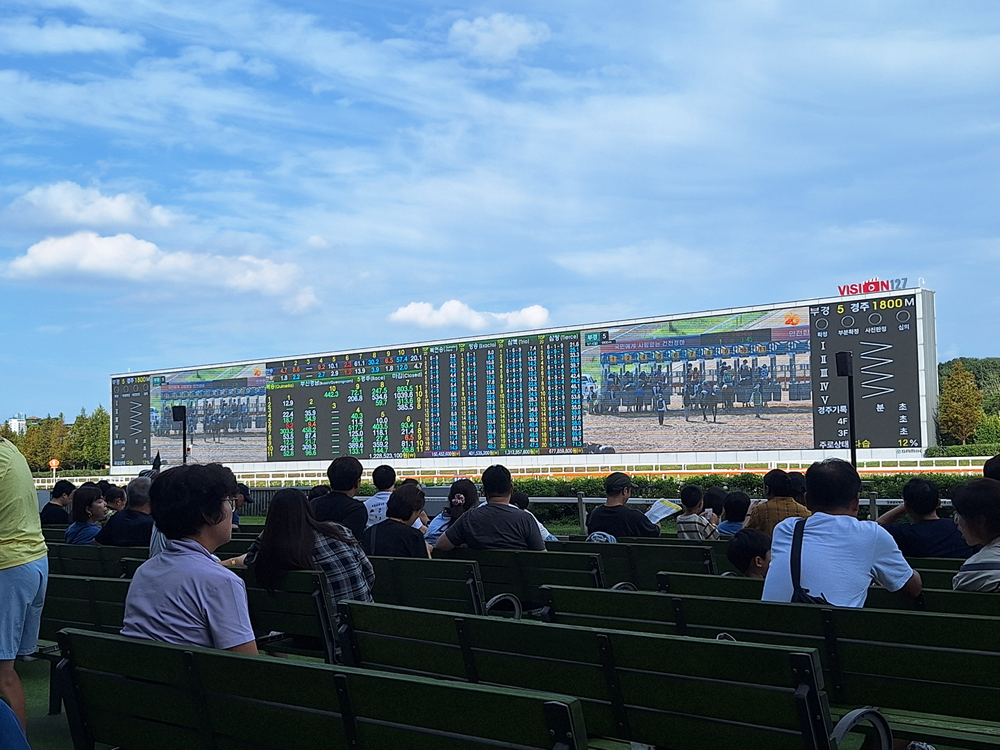
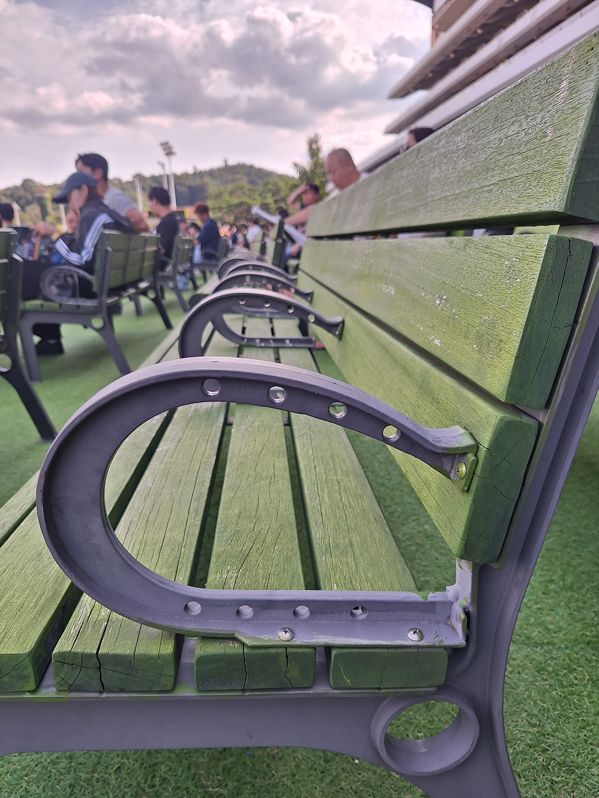
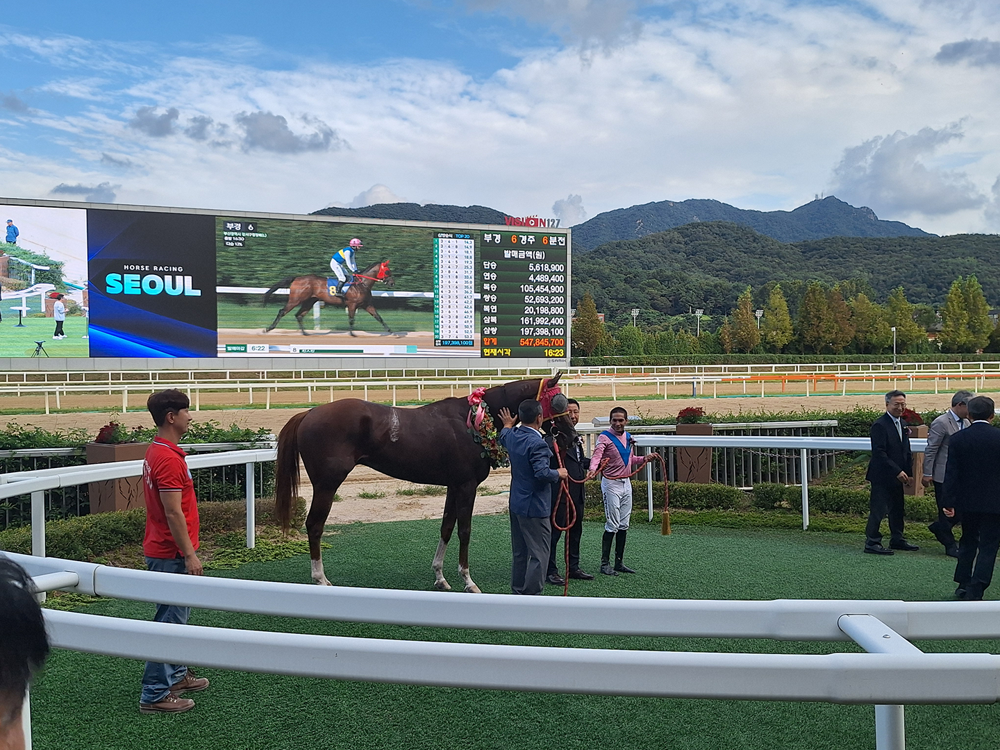
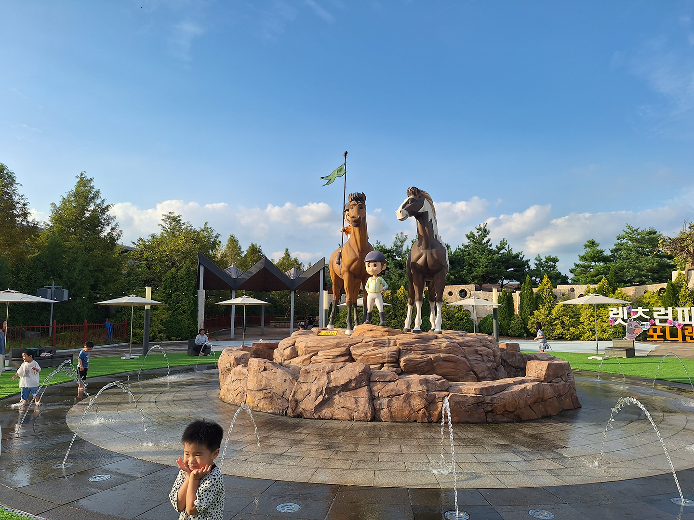
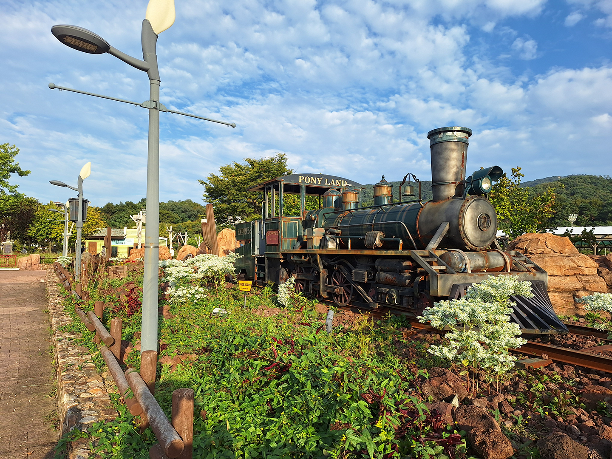
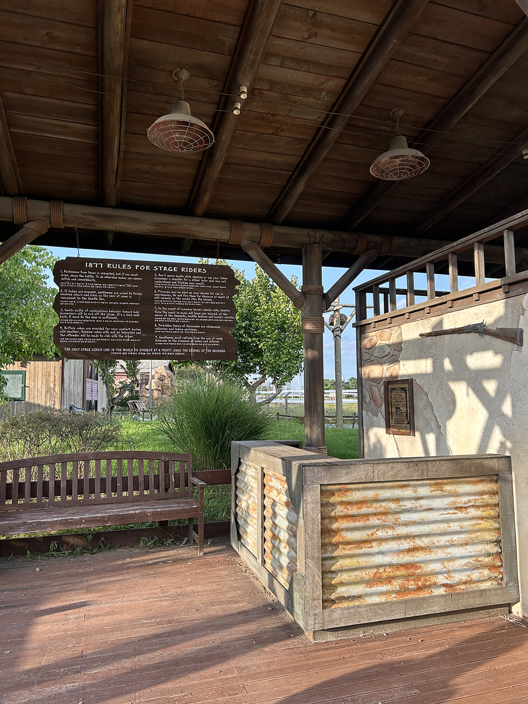
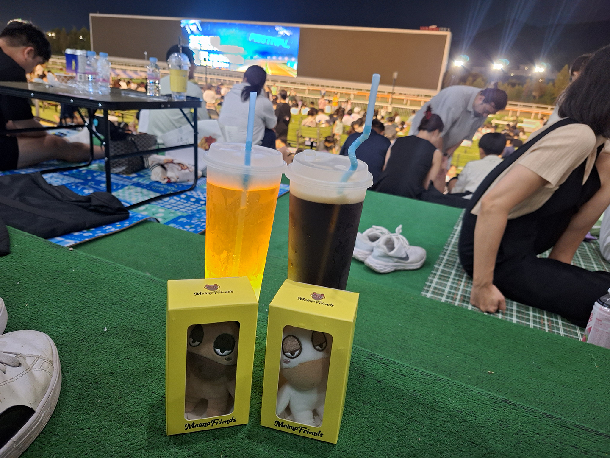
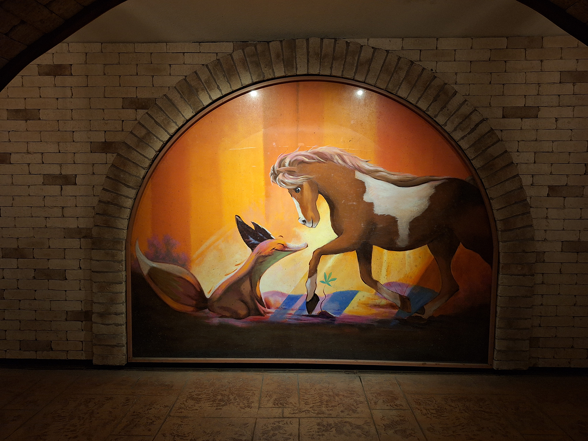

Seoul Race Park - Horse Racing
I knew that horse racing was a thing in Korea. But I never expected I would ever go or be interested in attending an event. Those of you that watched Squid Game might already have an idea of this…But in Korea, the image of horse racing is usually of old men gambling and yelling at TV screens. So, I honestly had no prior interest in attending an event.
But a few weeks ago, I had the opportunity to go to the racetrack. My girlfriend had seen some videos on Instagram that showed off the interesting aspects of attending the event and thought it might be fun. At the very least, we would get a new experience out of it and maybe some stories to talk about.
What we actually found at the racetrack shattered all of our previous biases about it. In reality, it was actually a fun and family friendly event.
Location
Head towards these teepee-looking overhangs after you exit the station to easily find the path towards the track!
Let’s first talk about the location. There are a couple horse tracks around the country, in places such as Seoul, Busan, and Jeju. The one we went to is called Seoul Race Park or LetsRun Seoul.
Depending on where you are located in Seoul, it might be a fairly quick or fairly long trip to get there. The park is actually technically outside of Seoul, just to the south in Gyeonggi-do, the region surrounding Seoul.
It is located on Line 4 at the Seoul Racecourse Park Station, so it is easy to get to. After arriving at the station, it is very easy to get to the park. Exits 1 and 2 are the best and will put you right onto an easy walking path about 2 minutes from the park.
Being located outside of Seoul is actually a major benefit to the park experience, in my opinion. This allows the track to be located in a more rural area, which gives it this beautiful backdrop of being nestled in between the tree-covered mountains. On a beautiful weather day like the day we attended, the atmosphere just feels so peaceful and calm. I was absolutely in love with the atmosphere on arrival. The stunning greenery of the Korean mountains never gets old.
The Amenities

Now, let’s talk about the actual park itself, and its various amenities. To get into the park, after walking on the path mentioned earlier, there is a simple ticket gate system. You can either buy a ticket at the booths located right next to the gates, or you can buy a ticket ahead of time online and use your phone to enter the park.
They are even trying to attract more people to come to the park these days, I assume to increase interest and maybe even in hopes to change their image. So, at the time of our visit, if you have a Korean phone number, you can even get into the park for free on your first visit. This is what we ended up doing and it was fairly simple, though you probably need to know Korean to navigate the system. I don’t believe the info was in English.
The park’s amenities were actually quite nice too. We weren’t even able to get to them all!
There is a horse museum. We weren’t able to get to it, but I’ve read that it has info about horse racing in Korea and even historical items on display about horses and their impact on earlier Korean kingdoms and dynasties.
Next to the museum and in front of the track, there was a small circle with minimal stadium seating where the horses that were due up to be racing were walked around and displayed for spectators to see. I think this was for the people that wanted to see the horses they wanted to bet on, but I’m not for sure about that. It, of course, had the added benefit of exciting the young kids in attendance.
Next up are the actual buildings and grandstands for watching the racing. There are two main buildings, Happy Ville and Lucky Ville. Inside both buildings are quite a lot of conveniences and food. There are some restaurants inside selling Korean food, fast food, and some other various items like churros.
There was even a room where they have “classes” a couple times a day to teach newcomers about horse racing and how to read the scoreboard. And then, as to be expected, there were also booths for placing bets on the various races that are occurring.
For most people, everything they will want is on the first floor. We checked out the 2nd and 3rd floors, but they seemed to only have betting booths and some seating. If we had gotten there earlier, maybe it would have been cool to grab a balcony seat for watching the races, but unsurprisingly, they were all full.
Look at the cute horseshoe armrests!
Now, as for the seating, there are a number of different options for you. There are seats inside, on every floor, with TVs for showing the races, but to me, that seemed to defeat the purpose of going to the race park in person, so we didn’t sit there.
On the 2nd and 3rd floors, there is some balcony seating, like I mentioned earlier. These are prime seats and were of course, packed. I assume to get those seats, you would need to get there early in the day.
For the rest of the seating, there was a lot of seating outside. There are some bleachers, benches, and tables on the grounds and stairs leading up to the first floor of the buildings.
Then, on the ground, there were a bunch of benches for sitting, spread all across the final straightaway. When one of the races was about to occur, though, people were standing and getting up close to the track to see the horses come thundering by.
One of the things I really liked is how they really leaned into the horse theme on everything. It seemed every type of bench or seating had some small random horse-related detail or adornment. For example, some of the benches’ armrests were actually shaped to look like horseshoes. It’s little things like that that I appreciate about places, that makes them seem nicer and not just like they were thrown together blandly.
The Races

Now, for the main event, the actual races. Now, as someone that did track in high school, I am of the belief that racing is far more interesting than anybody gives it credit for. Various strategies and styles can play out in different races, which can lead to some exciting races and finishes.
In the very first race, we were lucky to witness a great race. It was a fast-starting race, but one horse that had taken it more conservatively at the beginning and was middle of the pack for the beginning came storming down the back straight to blow by the other horses at the end to take the win. It was exciting to witness and my girlfriend seemed immediately hooked after seeing it.
After attending the races, I also believe that horse racing may even offer something for the people that don’t care about the racing as much. Many people, especially younger kids, just liked seeing the horses themselves. Whether it was a racing setting or not seemingly didn’t matter to them. They just wanted to see the animals.
Throughout the day, various races occurred, including at other tracks around the country. To accommodate this, there was a massive screen that took up most of the final straightaway. They used this screen to show the other races around the country. I noticed that they smartly staggered events evenly at the various tracks around the country.
The screen was also used to display the results and stats, such as the lengths between finishers. It’s horse racing, so of course they were also showing the up-to-date betting lines and total money on the line for each race. There was even a timer to warn you to get your bets in on time.
We attended in the fall, and at the time, I had assumed that the races were only in the warmer months of spring, summer, and fall. Or even that the summer was too hot, and races were only held in spring and fall. But while researching for this article, I was surprised to find that they, in fact, host races all year long! It made me curious what racing on a cold, snowy winter day is like!
Malma

Now, if you have been in Korea long enough, you will know that an effective way to attract young people to your event is to have a cute character associated with it.
Naturally, horse racing proved to be no different. Their character is named Malma, a play on the Korean word for horse, mal (말). Malma is a tired looking horse, who looks like they are just trying to get through the day. It looked kinda dumb, but in a strangely cute way. I definitely approved of its design.
There were various Malma posters, pictures, and Malma-branded items everywhere. There was even a small area inside the buildings where you could buy various Malma souvenirs. Surprisingly the prices weren’t that bad for what I was expecting.

Pony Land
I mentioned that the track was trying to cater to all ages, and this is no more obvious than at Pony Land. Pony Land is located in the center of the track itself. To get there, we had to walk through a long underground corridor, which had random horse-based artwork.
In Pony Land itself, there were a bunch of things catered especially to young kids. There was a small playground, a couple rides, and some activities for young kids to do. There was also a petting/meeting area to see some small ponies.
There was also…an American Wild West-themed village??? This was surprising to me and, as an American myself, I couldn’t help but laugh when I saw it. There was nothing wrong with it or inaccurate about it, but it just wasn’t what I was expecting to see in Korea. We had a good time walking around the area, and you could actually even see the start line for the horse races from here, which was cool to get a different view.
Park Events and Festivals

To attract more people to the park, they also host various events throughout the year. At the time we attended, there was a street market and beer festival going on. Booths were set up next to the track, with people selling various food items or trinkets. It was a small market, so we strolled around a little bit and then ended up getting some ddeokbokki and beer.
In the evening, they were playing a 10-minute AI-animated “movie” on the large screen in the center of the track I mentioned earlier. It was some weird plot about a girl and her horse that had unknowingly intruded and were living on some godly land. They then had to race against horses created by the gods themselves? in order to earn the right to continue living on that land. I don’t know. It was weird and hard to follow…It was cheesy as hell and the AI couldn’t even animate the mouths to fit the dialogue, but at least I could have a laugh at the bad plot. It only being 10 minutes was about the longest I could last though, so good thing that was over quick.
Then, it was on to the actual thing we stayed to watch…the drone show! There was a 15ish minute drone show that of course included images of Malma and other characters. The drone shows are always cool to watch and they seem to get better every time. Korea has really jumped into the drone show business, and they are an attraction at many of the events I have attended in Korea, even random small free shows at the river.
Conclusion

I went to the horse track not expecting much, but hoping to at least get some stories or a new experience to talk about. But what I actually found was something that was surprisingly fun, safe, and family friendly. It completely shattered my preconceived ideas and biases about the whole concept.
There is something for people of all ages to enjoy here and has unexpectedly been added to my list of things that I would recommend for people to experience, especially for those that are going to be in Korea for a longer term. The entire event was absolutely peppered with a variety of things to do and enjoy. It is an old person hobby with young person flair!